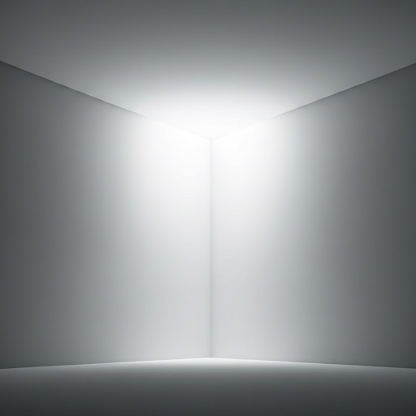

VOLUME 01 / 2024
THE ARCHITECTURE
OF SILENCE.

FIGURE 0.1
Study of light refraction on non-textured surfaces. Observation of the void as a structural necessity in modern minimalist practice.
PRECISION
OVER
ORNAMENT.
Functionalist utility is not the absence of beauty, but the purification of it. By stripping away the tertiary, we expose the primary intent of the information architecture.
AXIS A
GRID SYSTEM
AXIS B
VOID DENSITY
Every element snaps to a mathematical baseline, ensuring visual rhythm even in the absence of explicit borders. We define space by what we choose not to include in the visual field.
JOIN THE ARCHIVE
Subscribe for the quarterly journal of minimal aesthetics and architectural studies.